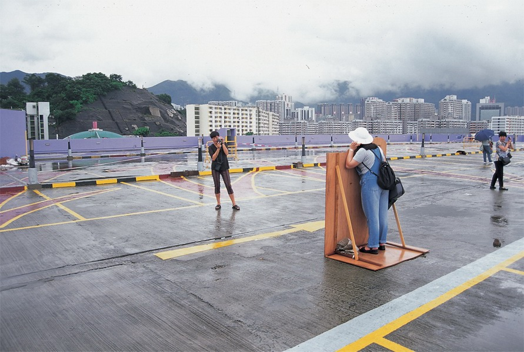

这里通往卡塞尔 This way to Kassel
装置 Installation
998年正值香港回归一周年之际，艺术家为香港机场搬迁所做的一个项目。顔磊用东南亚的语言和英语在机场写下标语“这里通往卡塞尔”，人物模型身着东南亚的典型服饰，并留出头部供参观者进行摆拍
1998 was the year of the first anniversary since the reunification between Hong Kong and China. The work was made by the artist responding to the relocation of Hong Kong International Airport. Yan Lei wrote both in English and languages of South Asia the phrase, “This way to Kassel”. The slogan was placed next to characters dressed in attire typical to South East Asia, which visitors could place their heads behind to pose for a photograph.
